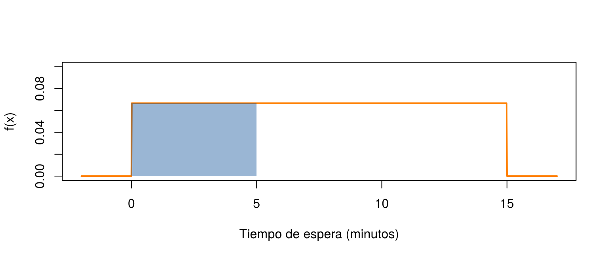
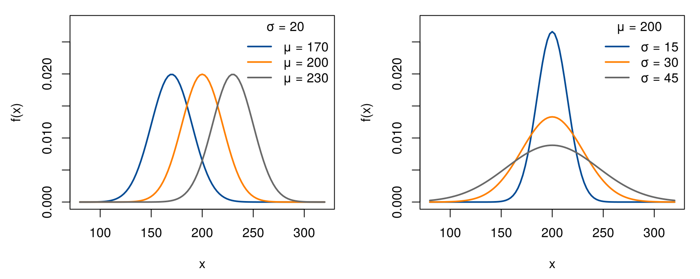
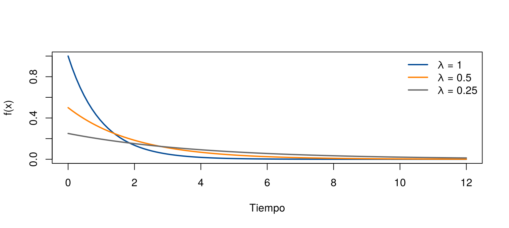
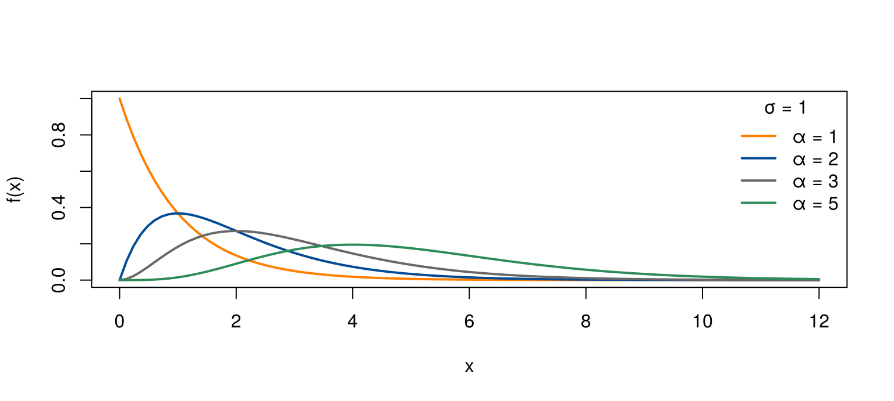
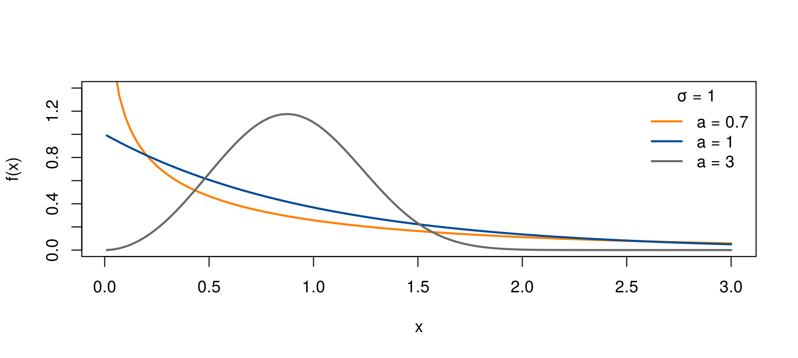

Las variables continuas, como tiempos, pesos y longitudes, también tienen modelos que se repiten en muchas situaciones. El peso de un producto suele seguir una curva en forma de campana; el tiempo entre llegadas de clientes, una curva que decrece; la vida útil de un componente, curvas que dependen de cómo se desgasta.
Esta página presenta cinco modelos continuos: uniforme, normal,
exponencial, gamma y Weibull. Recuerde de Variable aleatoria que, en una variable
continua, la probabilidad es el área bajo la curva de
densidad. Las funciones de R siguen las mismas reglas
de Modelos discretos: d para
la densidad, p para la acumulada, q para los
cuantiles y r para simular. Los bloques de código se
ejecutan en orden.
Una variable uniforme en el intervalo \([a, b]\) puede tomar cualquier valor del intervalo, y su densidad es constante: ningún tramo del intervalo es más probable que otro de la misma longitud. Se escribe \(X \sim U(a, b)\).
\[ f(x) = \frac{1}{b - a}, \quad a \leq x \leq b \qquad\qquad E(X) = \frac{a + b}{2}, \quad \text{Var}(X) = \frac{(b - a)^2}{12} \]
La probabilidad de un tramo es proporcional a su longitud: \(P(c \leq X \leq d) = \dfrac{d - c}{b - a}\).
Ejemplo. Un bus pasa cada 15 minutos y una persona llega al paradero sin saber el horario. Su tiempo de espera es \(X \sim U(0, 15)\). La probabilidad de esperar 5 minutos o menos es \(5/15 = 1/3\), y la espera promedio es de 7.5 minutos.
curve(dunif(x, min = 0, max = 15), from = -2, to = 17, n = 1000, col = "#FF7F00", lwd = 2,
ylim = c(0, 0.1), xlab = "Tiempo de espera (minutos)", ylab = "f(x)")
rect(0, 0, 5, 1/15, col = adjustcolor("#034A94", 0.4), border = NA)
Densidad del tiempo de espera, U(0, 15). El área azul es P(X ≤ 5) = 1/3.
punif(5, min = 0, max = 15) # P(X <= 5)[1] 0.3333333c(media = (0 + 15) / 2, varianza = 15^2 / 12) media varianza
7.50 18.75 El modelo normal es el más importante de la estadística. Su densidad tiene forma de campana, simétrica alrededor de la media \(\mu\), y su ancho depende de la desviación estándar \(\sigma\). Se escribe \(X \sim N(\mu, \sigma^2)\).
\[ f(x) = \frac{1}{\sigma\sqrt{2\pi}}\; e^{-\frac{(x - \mu)^2}{2\sigma^2}}, \qquad E(X) = \mu, \quad \text{Var}(X) = \sigma^2 \]
Describe bien muchas mediciones: pesos y dimensiones de productos fabricados, errores de medición, estaturas. Además, como se verá en la unidad de inferencia, los promedios de muestras grandes siguen aproximadamente un modelo normal.
La figura muestra cómo cambian las curvas con sus parámetros: al cambiar \(\mu\) la campana se desplaza, y al aumentar \(\sigma\) se vuelve más baja y más ancha. El área bajo cada curva sigue siendo 1.
par(mfrow = c(1, 2), mar = c(4.5, 4.5, 1, 1))
colores <- c("#034A94", "#FF7F00", "#686868")
curve(dnorm(x, 170, 20), 80, 320, col = colores[1], lwd = 2, ylim = c(0, 0.028), xlab = "x", ylab = "f(x)")
curve(dnorm(x, 200, 20), add = TRUE, col = colores[2], lwd = 2)
curve(dnorm(x, 230, 20), add = TRUE, col = colores[3], lwd = 2)
legend("topright", c("μ = 170", "μ = 200", "μ = 230"), col = colores, lwd = 2, bty = "n", title = "σ = 20")
curve(dnorm(x, 200, 15), 80, 320, col = colores[1], lwd = 2, ylim = c(0, 0.028), xlab = "x", ylab = "f(x)")
curve(dnorm(x, 200, 30), add = TRUE, col = colores[2], lwd = 2)
curve(dnorm(x, 200, 45), add = TRUE, col = colores[3], lwd = 2)
legend("topright", c("σ = 15", "σ = 30", "σ = 45"), col = colores, lwd = 2, bty = "n", title = "μ = 200")
Izquierda: tres normales con la misma desviación estándar y distinta media. Derecha: tres normales con la misma media y distinta desviación estándar.
Una fábrica produce barras metálicas cuyo peso sigue un modelo normal con media 200 g y desviación estándar 30 g. Las barras de menos de 150 g no cumplen la norma. ¿Qué proporción de las barras sí la cumple?
\[ P(X > 150) = 1 - P(X \leq 150) = 0.9522 \]
1 - pnorm(150, mean = 200, sd = 30) # P(X > 150)[1] 0.9522096pnorm(230, 200, 30) - pnorm(170, 200, 30) # P(170 <= X <= 230)[1] 0.6826895qnorm(0.05, mean = 200, sd = 30) # peso por debajo del cual queda el 5 % de las barras[1] 150.6544El 95.2 % de las barras cumple la norma. Además, el 5 % más liviano pesa menos de 150.7 g.
La función pnorm(x, mean, sd) recibe la
desviación estándar, no la varianza. Si un enunciado
dice \(N(200, 900)\), la varianza es
900 y hay que usar sd = 30.
La normal estándar, \(Z \sim N(0, 1)\), tiene media 0 y desviación estándar 1. Cualquier normal se puede llevar a ella con la estandarización:
\[ Z = \frac{X - \mu}{\sigma} \]
El valor \(z\) dice a cuántas desviaciones estándar de la media está \(x\). En el ejemplo de las barras, \(z = (150 - 200)/30 = -1.67\): un peso de 150 g está 1.67 desviaciones estándar por debajo de la media. Las tablas de la normal que se usaban antes de los computadores daban solo probabilidades de \(Z\).
z <- (150 - 200) / 30
z[1] -1.6666671 - pnorm(z) # el mismo resultado que con X: 0.9522[1] 0.9522096Con \(z\) redondeado a dos decimales, \(-1.67\), una tabla da \(1 - 0.0475 = 0.9525\). La pequeña diferencia con 0.9522 se debe solo al redondeo.
En cualquier normal, sin importar sus parámetros:
| Intervalo | Probabilidad |
|---|---|
| \(\mu \pm 1\sigma\) | 0.683 |
| \(\mu \pm 2\sigma\) | 0.954 |
| \(\mu \pm 3\sigma\) | 0.997 |
Por ejemplo, el 95 % de las barras pesa entre \(200 - 2 \times 30 = 140\) g y \(200 + 2 \times 30 = 260\) g. Esta regla solo vale para el modelo normal; para otros modelos, las proporciones son distintas.
pnorm(1) - pnorm(-1)[1] 0.6826895pnorm(2) - pnorm(-2)[1] 0.9544997pnorm(3) - pnorm(-3)[1] 0.9973002En el gráfico interactivo puede mover la media, la desviación estándar y los límites \(a\) y \(b\). El área azul es \(P(a \leq X \leq b)\) y su valor aparece a la izquierda. Los botones ubican los límites en \(\mu \pm 1\sigma\), \(\mu \pm 2\sigma\) y \(\mu \pm 3\sigma\): compruebe que la probabilidad no cambia aunque cambie la media o la desviación estándar.
El modelo exponencial describe el tiempo de espera hasta que ocurre un evento, cuando los eventos ocurren al azar con una tasa constante \(\lambda\) por unidad de tiempo. Es el compañero continuo del modelo de Poisson: si el número de llamadas por minuto es Poisson con promedio \(\lambda\), el tiempo entre una llamada y la siguiente es exponencial con tasa \(\lambda\). Se escribe \(X \sim \text{Exp}(\lambda)\).
\[ f(x) = \lambda\,e^{-\lambda x}, \quad F(x) = 1 - e^{-\lambda x}, \quad x \geq 0 \qquad\qquad E(X) = \frac{1}{\lambda}, \quad \text{Var}(X) = \frac{1}{\lambda^2} \]
La media y la desviación estándar son iguales, \(1/\lambda\), así que el coeficiente de variación es siempre 100 %. El ejemplo de la lavadora de Variable aleatoria es una exponencial con \(\lambda = 1/4\).
La vida útil de un chip, en años, sigue un modelo exponencial con
tasa \(\lambda = 0.25\) fallas por año,
es decir, con vida media de \(1/0.25 =
4\) años. En R, el argumento rate
es la tasa \(\lambda\):
pexp(1, rate = 0.25) # P(X <= 1): falla en el primer año[1] 0.22119921 - pexp(2, rate = 0.25) # P(X > 2): dura más de 2 años[1] 0.6065307qexp(0.5, rate = 0.25) # mediana: la mitad de los chips falla antes de este tiempo[1] 2.772589curve(dexp(x, rate = 1), 0, 12, col = "#034A94", lwd = 2, ylim = c(0, 1), xlab = "Tiempo", ylab = "f(x)")
curve(dexp(x, rate = 0.5), add = TRUE, col = "#FF7F00", lwd = 2)
curve(dexp(x, rate = 0.25), add = TRUE, col = "#686868", lwd = 2)
legend("topright", c("λ = 1", "λ = 0.5", "λ = 0.25"), col = c("#034A94", "#FF7F00", "#686868"), lwd = 2, bty = "n")
Densidades exponenciales con distintas tasas. Con una tasa mayor, los tiempos cortos son más probables.
Un cliente tiene un chip que ya funcionó 3 años. ¿Cuál es la probabilidad de que dure al menos 2 años más? Con la probabilidad condicional:
\[ P(X > 5 \mid X > 3) = \frac{P(X > 5)}{P(X > 3)} = \frac{e^{-0.25 \times 5}}{e^{-0.25 \times 3}} = e^{-0.25 \times 2} = 0.6065 \]
Es la misma probabilidad de que un chip nuevo dure más de 2 años. Para el modelo exponencial, un chip usado se comporta como uno nuevo. Esto es razonable para fallas por accidentes o picos de voltaje, pero no para piezas que se desgastan; para estas se usan los modelos gamma o Weibull.
(1 - pexp(5, 0.25)) / (1 - pexp(3, 0.25))[1] 0.60653071 - pexp(2, 0.25)[1] 0.6065307El modelo gamma generaliza al exponencial. Tiene dos parámetros: uno de forma, \(\alpha\), y uno de escala, \(\sigma\). Se usa para tiempos y cantidades positivas con asimetría a la derecha, como tiempos de reparación, montos de reclamaciones de seguros o cantidad de lluvia.
\[ E(X) = \alpha\,\sigma, \qquad \text{Var}(X) = \alpha\,\sigma^2 \]
En R, las funciones dgamma() y
pgamma() reciben shape = \(\alpha\) y scale = \(\sigma\). Cuidado: si se escribe un número
sin nombre como segundo parámetro, R lo toma como la
tasa rate = \(1/\sigma\), no como la escala.
formas <- c(1, 2, 3, 5)
colores <- c("#FF7F00", "#034A94", "#686868", "#2E8B57")
curve(dgamma(x, shape = 1, scale = 1), 0, 12, col = colores[1], lwd = 2, ylim = c(0, 1),
xlab = "x", ylab = "f(x)")
for (i in 2:4) curve(dgamma(x, shape = formas[i], scale = 1), add = TRUE, col = colores[i], lwd = 2)
legend("topright", paste("α =", formas), col = colores, lwd = 2, bty = "n", title = "σ = 1")
Densidades gamma con escala 1 y distintas formas.
Ejemplo. A un centro de atención llegan en promedio 2 llamadas por minuto, así que el tiempo entre llamadas es exponencial con media 0.5 minutos. El tiempo hasta la tercera llamada es gamma con \(\alpha = 3\) y \(\sigma = 0.5\):
pgamma(1, shape = 3, scale = 0.5) # P(la tercera llamada llega en el primer minuto)[1] 0.32332363 * 0.5 # tiempo esperado hasta la tercera llamada[1] 1.5La probabilidad de que lleguen 3 llamadas en el primer minuto es
0.323. Es la misma probabilidad de que en un minuto lleguen 3 o más
llamadas en el modelo de Poisson: 1 - ppois(2, 2) también
da 0.323.
El modelo Weibull es el más usado para la vida útil de componentes y en estudios de confiabilidad. Tiene un parámetro de forma, \(a\), y uno de escala, \(\sigma\):
\[ F(x) = 1 - e^{-(x/\sigma)^a}, \qquad x > 0 \]
Su gran ventaja es que el parámetro de forma indica cómo cambia el riesgo de falla con el tiempo. La función de riesgo mide qué tan probable es que un componente que ha funcionado hasta el tiempo \(x\) falle justo después:
| Forma | Riesgo de falla | Situación típica |
|---|---|---|
| \(a < 1\) | Disminuye con el tiempo | Fallas tempranas por defectos de fabricación |
| \(a = 1\) | Constante | Fallas al azar; es la exponencial con media \(\sigma\) |
| \(a > 1\) | Aumenta con el tiempo | Desgaste y envejecimiento |
En R, pweibull(x, shape, scale) recibe
\(a\) y \(\sigma\).
Ejemplo. La vida útil de un rodamiento, en horas, sigue un modelo Weibull con forma \(a = 2\) y escala \(\sigma = 1000\) horas. Como \(a > 1\), el rodamiento se desgasta: su riesgo de falla aumenta con el uso.
1 - pweibull(500, shape = 2, scale = 1000) # P(dura más de 500 horas)[1] 0.7788008qweibull(0.10, shape = 2, scale = 1000) # tiempo antes del cual falla el 10 %[1] 324.59281000 * gamma(1 + 1/2) # vida media: sigma * Γ(1 + 1/a)[1] 886.2269El 77.9 % de los rodamientos dura más de 500 horas, y el 10 % falla antes de 325 horas. Un fabricante podría usar este último valor para fijar el período de garantía.
curve(dweibull(x, shape = 0.7, scale = 1), 0.01, 3, col = "#FF7F00", lwd = 2, ylim = c(0, 1.4),
xlab = "x", ylab = "f(x)")
curve(dweibull(x, shape = 1, scale = 1), add = TRUE, col = "#034A94", lwd = 2)
curve(dweibull(x, shape = 3, scale = 1), add = TRUE, col = "#686868", lwd = 2)
legend("topright", c("a = 0.7", "a = 1", "a = 3"), col = c("#FF7F00", "#034A94", "#686868"), lwd = 2, bty = "n", title = "σ = 1")
Densidades Weibull con escala 1 y distintas formas.
| Modelo | Qué describe | Parámetros en R | \(E(X)\) | Funciones en R |
|---|---|---|---|---|
| Uniforme | Un valor al azar en un intervalo | min = \(a\), max = \(b\) |
\(\dfrac{a + b}{2}\) | dunif, punif,
qunif, runif |
| Normal | Mediciones simétricas alrededor de una media | mean = \(\mu\), sd = \(\sigma\) |
\(\mu\) | dnorm, pnorm,
qnorm, rnorm |
| Exponencial | Tiempo hasta un evento, con tasa constante | rate = \(\lambda\) |
\(\dfrac{1}{\lambda}\) | dexp, pexp,
qexp, rexp |
| Gamma | Tiempos y cantidades positivas asimétricas | shape = \(\alpha\), scale = \(\sigma\) |
\(\alpha\sigma\) | dgamma, pgamma,
qgamma, rgamma |
| Weibull | Vida útil y confiabilidad | shape = \(a\), scale = \(\sigma\) |
\(\sigma\,\Gamma(1 + 1/a)\) | dweibull, pweibull,
qweibull, rweibull |
| Problema | Causa | Solución |
|---|---|---|
pnorm(x, 200, 900) cuando la varianza es
900 |
pnorm() recibe la desviación estándar |
Usar sd = sqrt(900) = 30 |
pexp(x, 4) cuando la media es 4 |
pexp() recibe la tasa, no la media |
Usar rate = 1/4 |
pgamma(x, 3, 2) pensando que 2 es la
escala |
El tercer argumento sin nombre es la tasa | Escribir scale = 2 |
| Usar la regla empírica con un modelo que no es normal | La regla solo vale para la normal | Calcular la probabilidad con el modelo correcto |
| Usar el modelo exponencial para piezas que se desgastan | La exponencial supone un riesgo constante | Usar un Weibull con forma mayor que 1 |
La estatura de los hombres adultos de una ciudad sigue un modelo normal con media 172 cm y desviación estándar 7 cm. ¿Qué proporción mide más de 185 cm? ¿Qué estatura supera solo el 10 % de los hombres?
1 - pnorm(185, mean = 172, sd = 7)[1] 0.03164542qnorm(0.90, mean = 172, sd = 7)[1] 180.9709El 3.2 % mide más de 185 cm, y solo el 10 % supera 181 cm.
A un cajero llegan en promedio 12 clientes por hora. ¿Cuál es la probabilidad de que pasen más de 10 minutos sin que llegue nadie?
La tasa es 12 por hora, es decir, \(\lambda = 0.2\) clientes por minuto.
1 - pexp(10, rate = 0.2)[1] 0.1353353La probabilidad es \(e^{-2} =
0.135\). También se obtiene con Poisson: es la probabilidad de 0
llegadas en 10 minutos, dpois(0, 2).
Genere 10 000 valores de una normal con media 200 y desviación
estándar 30 con rnorm(). ¿Qué proporción cae entre 140 y
260? Compare con la regla empírica.
set.seed(2026)
pesos <- rnorm(10000, mean = 200, sd = 30)
mean(pesos >= 140 & pesos <= 260)[1] 0.9548La proporción simulada es muy cercana a 0.954, como dice la regla empírica para \(\mu \pm 2\sigma\).
Con el rodamiento Weibull del ejemplo (forma 2, escala 1 000 horas), ¿qué garantía, en horas, debería dar el fabricante para que solo el 5 % de los rodamientos falle dentro de ella? ¿Cuál es la probabilidad de que un rodamiento que ya funcionó 1 000 horas dure 500 más? Compárela con la de un rodamiento nuevo.
qweibull(0.05, shape = 2, scale = 1000) # garantía[1] 226.4802(1 - pweibull(1500, 2, 1000)) / (1 - pweibull(1000, 2, 1000)) # usado[1] 0.28650481 - pweibull(500, 2, 1000) # nuevo[1] 0.7788008La garantía sería de 226 horas. Un rodamiento usado tiene probabilidad 0.287 de durar 500 horas más, mientras que uno nuevo tiene 0.779: con forma mayor que 1, el desgaste hace que el usado sea menos confiable, al contrario de lo que pasa con la exponencial.
?Uniform,
?Normal, ?Exponential,
?GammaDist, ?Weibull).Última revisión: 7 de noviembre de 2026.